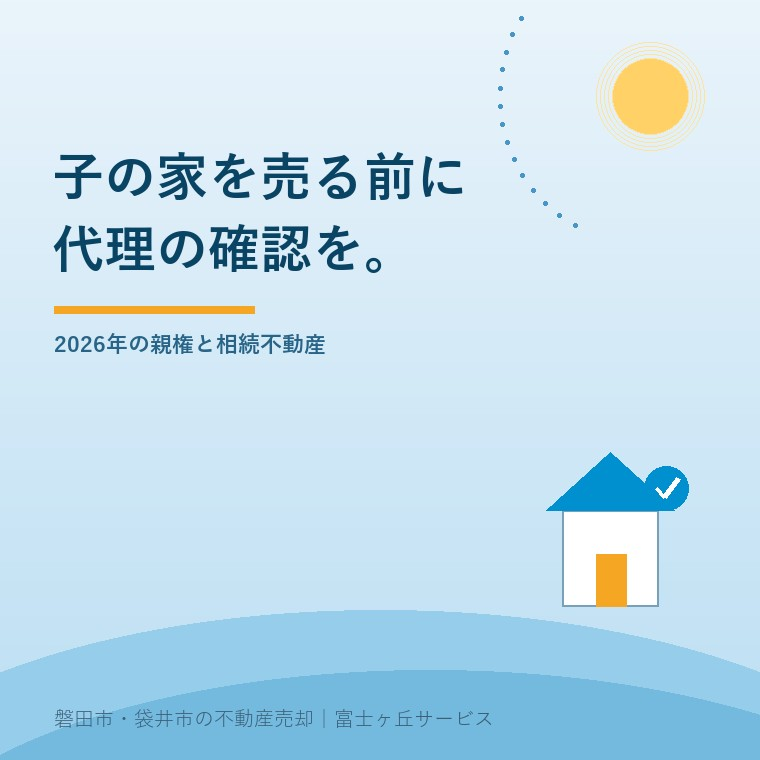
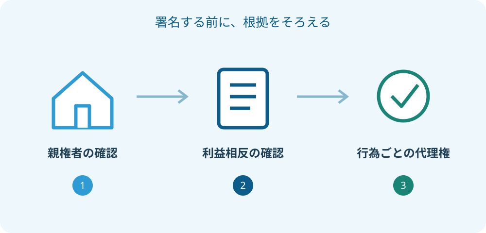

未成年者の相続不動産売却、2026年の代理確認
2026年9月26日｜カテゴリ：相続・未成年者の不動産

この記事の要点
Q. 未成年の子が相続した実家は、親が代わりに売れますか？
親であるだけで売却の代理ができるとは決められません。現在の親権者と、子との利益相反、代理権の範囲を先に確認します。遺産分割と売買契約は分けて専門家へ相談してください。磐田市・袋井市・森町では、富士ヶ丘サービスのような地域密着の会社に相談する選択肢もあります。
大石浩之（磐田市／不動産業）です。相続した実家を売る話では、「家族の代表者が書けば済む」と思い込まないようにします。所有者や相続人に未成年者が含まれるときは、査定額の相談と、誰が契約できるかの確認を並行して進めます。値段が決まった後で代理を考える順番にはしません。
2026年の改正と、その子の親権者を分けて確認
未成年者の不動産売却では、その子について現在誰が親権者なのかを確認することから始めます。函館市が2026年5月15日に更新した公式案内は、離婚後の子の養育に関する民法等改正が2026年4月1日に施行されたと説明しています。本記事では2026年9月26日に内容を確認しました。
案内では、父母双方が親権者である場合は共同して親権を行うことを原則としています。一方で、日常の監護教育や子の利益のため急迫の事情がある場合など、単独で行使できる場面も示されています。特定の事項について家庭裁判所で行使者を定める手続きもあります。
不動産の売買を、日常の買い物と同じ感覚で片方の親だけの判断にしないでください。「買主が急いでいるから」という売却側の都合を、法的な急迫の事情と自分たちで決めることも避けます。個々の事情で誰が行為できるかは、専門家に確認する事項です。
同居している人、日々子育てをしている人、法律上の親権者は、いつも同じ説明だけで済むとは限りません。仲介会社へ家庭内の詳しい経緯を無制限に話す必要はありませんが、親権者の確認に必要な資料は担当者と相談して揃えます。口頭の「私が親です」だけで契約書を作らないためです。
遺産分割と不動産売買は、一つの代理にまとめない
未成年の子と親権者が共同相続人である遺産分割協議は、裁判所が利益相反の代表例として説明しています。利益相反とは、片方の取り分を増やすと他方の取り分に影響するように、法律上の利害がぶつかることです。親が子を思う気持ちの有無を判定する言葉ではありません。
裁判所の案内によると、このような行為では子のために特別代理人の選任を家庭裁判所へ求めます。同じ親権者の下にいる子同士の利益がぶつかる場合にも確認が必要です。「家族全員が納得している」という言葉だけで、必要な代理を省略しないでください。
一方、未成年者の不動産を扱う場面がすべて同じ結論になるわけではありません。相続分を決める話、既に子名義の家を第三者へ売る話、親の借入れの担保にする話では、確認する行為が違います。未成年者がいるだけで必ず同じ手続き、と一括りにするのも正確ではありません。
私は、売却の相談メモを「誰が相続するかを決める」「名義を整える」「誰にいくらで売るかを決める」「代金を受け取る」に分けます。換価分割の協議書で確認する一行も、この順序の中で読みます。専門家には、どの段階まで終わっているかを伝えます。

良い点は、子の取り分を大人の都合から切り離せること
特別代理人を含む確認手続きの良い点は、子の財産を家族の都合だけで動かさない仕組みがあることだと私は考えます。家を売って管理費を減らしたい事情があっても、売却代金のうち誰のお金かを曖昧にしないための役割があります。
例えば相続した家の片付けを親が負担した場合、立て替えた費用の精算と、子の取り分の処分を一緒に計算したくなるかもしれません。これは仮の場面です。私は、請求書と支払記録を残し、精算できる範囲を先に相談する方が、後から説明しやすいと考えます。
複数の相続人がいる家では、早く換金したい人と、使い続けたい人も分かれます。共有名義の実家をどう考えるかに加え、未成年者の利益という確認軸が入ることで、声の大きな大人の希望だけを結論にしない話し合いができます。
私は、家を空けておく負担も軽く見ません。草刈りや保険、緊急修繕の出費が続けば、売却を急ぎたい気持ちは自然です。それでも、急ぐ家族の事情と、代理できる根拠を一つにしてはいけません。代理権の確認は、売却を邪魔する作業ではなく、売却を成立させる準備です。
注文したいのは、決済日より先に確認の日程を置くこと
未成年者が関わる売却では、仲介会社と専門家の間で必要書類と確認担当を早めに共有してほしい、と私は考えます。買主の希望日だけを先に決め、後から家庭裁判所や司法書士へ間に合わせてもらう計画は組みません。
| 整理する資料 | 専門家に確かめること |
|---|---|
| 子と親権者の戸籍等 | 現在の親権者と相続関係 |
| 登記事項証明書 | 家と土地の名義、持分、担保の記載 |
| 遺産分割の案・関係図 | 誰と誰の利益が相反するか |
| 選任に関する審判書等 | 代理人と対象になる行為の範囲 |
| 売却条件案・費用見積り | 契約と代金受領までの必要手続き |
表は相談準備用で、申立ての添付書類を網羅した一覧ではありません。裁判所は、子の住所地の家庭裁判所を申立先として案内しています。また、利益相反を示す資料として、協議書案や契約書案などを挙げています。必要書類は行為や裁判所の案内に合わせて確認してください。
自分で作った相続関係図は、事実を整理する下書きとして使います。法的な結論を先に書き込む必要はありません。分からない欄には「未確認」と記し、誰に確認するかだけ決めます。戸籍の収集も、取得範囲を専門家へ尋ねてから進めれば、同じ書類を何度も取り寄せる手間を抑えられます。
売買条件は価格だけでなく、引渡し時期、残置物、測量、費用負担も一緒に示します。査定書だけを見せても、子にどのような負担が生じる案かは伝わりません。選任された代理人がいる場合も、遺産分割の代理と後の売却の代理を同じ範囲だと推測せず、書類を読み直します。
磐田・袋井の実家と、子の住所が違う場合
磐田市や袋井市に実家があっても、特別代理人選任の案内で基準になるのは子の住所地です。物件の近くにある裁判所へ行けばよいと決めず、裁判所の提出先案内を確認します。遠方に住む家族ほど、建物の所在地と手続きの窓口を分けた予定表が役立ちます。
現地で必要な写真や査定と、家族側で準備する戸籍等は、担当者を分けて進められます。本人確認資料をメール等で送る時は、送付先と方法を相手に確認します。家族の情報をグループ全員へ共有するのでなく、手続きを担う相手へ必要な範囲で渡す段取りにします。
相続登記の準備がまだなら、相続登記を自分で進める場合と司法書士へ頼む場合も確認できます。ただし、書類を自分で集められることと、利益相反や代理の判断を自分だけで済ませられることは別です。難しい判断まで一人で背負う必要はありません。
富士ヶ丘サービスは、介護施設の運営から不動産事業を始め、磐田・袋井の家を地域の事情と合わせて相談できる窓口を設けています。私は、相続の法律判断を不動産査定の説明に混ぜず、弁護士・司法書士への確認が必要な点を整理して渡す進め方を勧めます。
子の代金をどの口座で受け取り、どの支出へ使う予定かも、契約条件の説明と切り離さず相談します。家族の生活費と相続財産を一つのメモに混ぜると、後日、何に使ったか説明しにくくなります。口座や管理方法の個別判断は専門家へ確かめ、領収書と入出金の記録を残す段取りを作ります。
子本人への説明も、大人同士の署名の段取りに埋もれさせたくありません。年齢や理解に応じ、家をどうしたいと考えているか、売る場合に何が変わるかを丁寧に話す姿勢を、私は大切にしたいと考えます。本人の気持ちを聞くことと、必要な法律上の代理を整えることは、どちらか片方で済ませる話ではありません。
相談結果は家族用にも短く残します。「次は戸籍を確認」「契約案を渡して回答待ち」など、未了の手続きと担当者だけを記録します。難しい法律用語を覚えるより、どの段階が終わっていないかを共有できる方が、売却の予定を無理なく組めます。
今日の一歩は、契約する人の欄を空欄のまま相談すること
未成年者の相続不動産を売る準備では、売却希望額と同時に、子の年齢、現在の名義、相続人、親権者、終わった手続きを一枚に書き出します。代理人がまだ確定していないなら、契約する人の欄を推測で埋めないことが最初の一歩です。
私は、どの家族にも売るのが最善だとは決められません。子が将来使う可能性と、管理費を払い続ける負担がぶつかることもあるからです。だからこそ、売る案と保有する案を比較するために、代理の確認と費用の整理を先に進めます。今日決めるのは、売るかどうかではなく、次に誰へ何を確かめるかで十分です。
家族の合意を大切にしながら、子の財産は子の財産として扱います。その線を守って進めることが、家族が困らない売却の土台です。親権、利益相反、特別代理人、相続登記、税務の個別判断は、弁護士・司法書士・税理士などの専門家に確認を。
よくある質問
- 2026年4月から、離婚した父母は全員共同親権ですか？
- 改正により離婚後の親権者を父母双方とする選択肢が広がったことと、個々の家庭の親権が自動的に変わることは別です。売却では制度名から推測せず、その子について現在誰が親権者なのかを戸籍や裁判所の書類等で確認します。判断できない点は、契約日を確定する前に弁護士や司法書士へ相談してください。
- 親子が相続人でも、仲が良ければ特別代理人は不要ですか？
- 裁判所は、親権者と未成年の子が共同相続人として行う遺産分割協議を、利益相反の例に挙げています。家族の仲の良さや、親が子を大切に思っていることだけでは代理できる理由になりません。相続関係と協議案を専門家へ提示し、子の住所地の家庭裁判所で必要な手続きを確認してください。
- 遺産分割で選ばれた特別代理人に、売却も任せられますか？
- 特別代理人が誰なのかだけでなく、どの行為について選任されているかを確認します。遺産分割のための選任を、後の売買契約や代金受領にそのまま使えると推測しないでください。審判書と売買案を司法書士や弁護士に見せ、必要な代理と書類を整理します。具体的な範囲は個別の手続きに即して確認が必要です。

この記事を書いた人：大石浩之（磐田市／不動産業・宅地建物取引士）
富士ヶ丘サービス株式会社。介護施設の運営から不動産事業を始め、磐田市・袋井市・森町で、介護と相続、実家の売却を一体で相談できる窓口を設けています。家族が困らない売却のため、資料と現地の条件を一件ずつ整理します。著者プロフィール
本記事は2026年9月26日時点の公開情報と筆者の意見です。制度・数値・手続きは変更されることがあります。個別の契約・税務・登記・相続の判断は、弁護士・税理士・司法書士などの専門家に確認を。